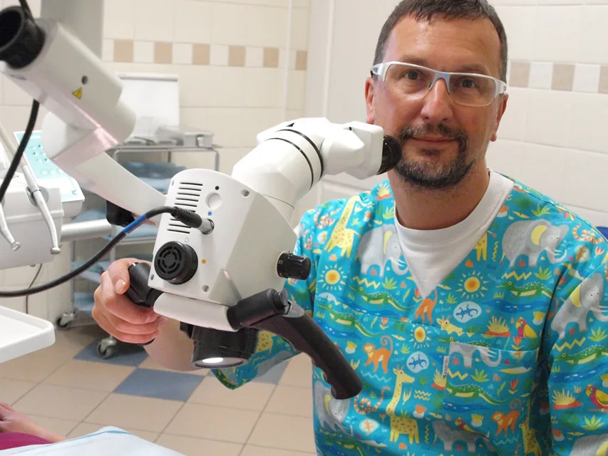
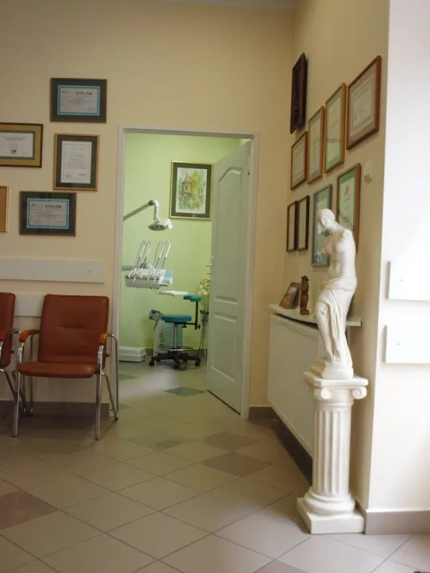
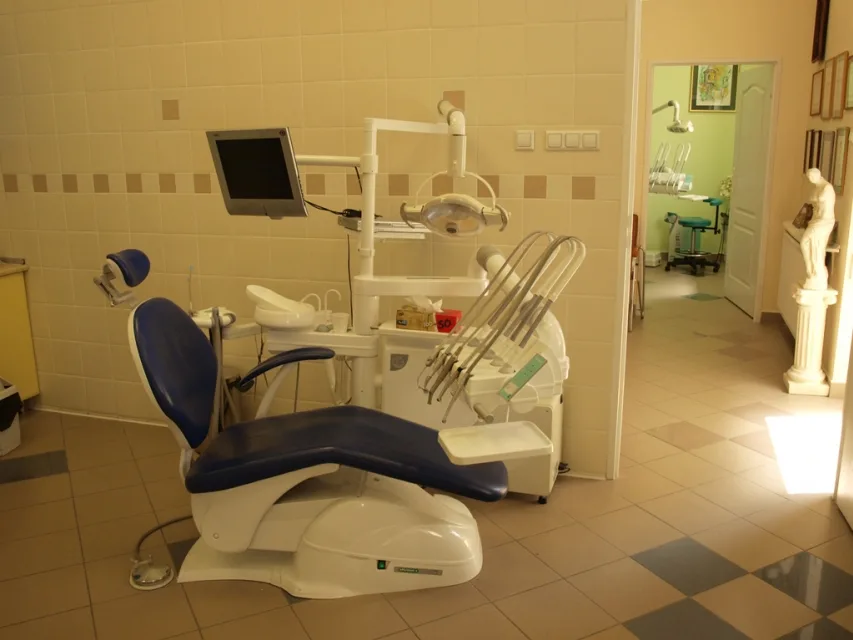
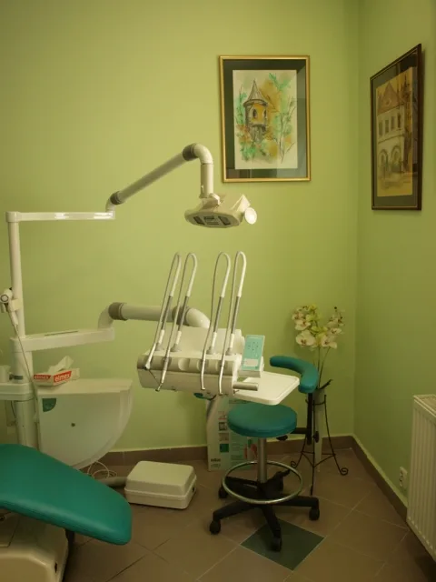
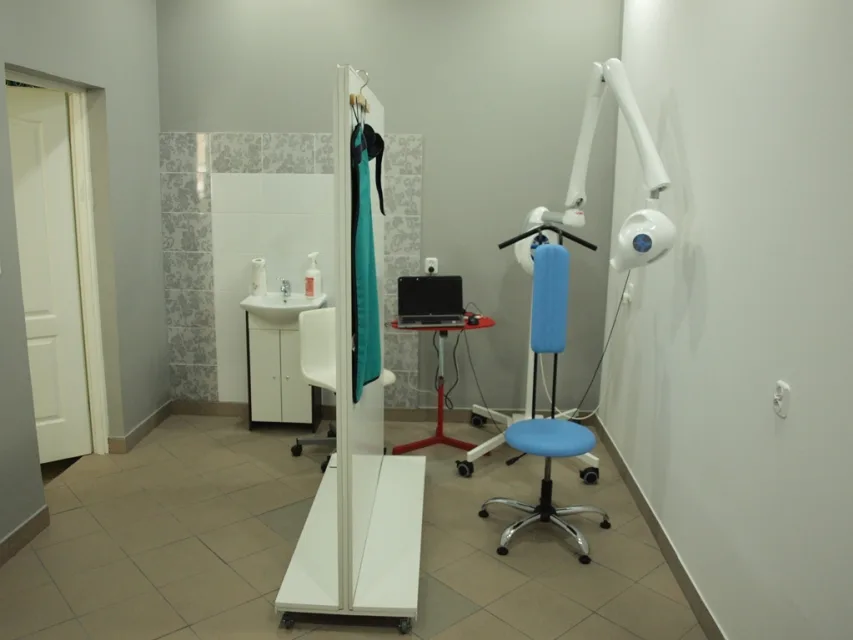

01
Stomatologia estetyczna
Obejmuje szereg zabiegów, których głównym celem jest poprawienie wyglądu pacjenta. Mają one miejsce w protetyce, ortodoncji, implantologii i stomatologii zachowawczej.
więcej o stomatologii estetycznejKielce · Śniadeckich 7 · od 1999 roku
DentalPark to nowoczesna pracownia stomatologiczna w Kielcach. Protetyka, implanty, stomatologia estetyczna i chirurgia — w jednym gabinecie.
Witamy
DentalPark - prywatna praktyka stomatologiczna powstała w 1999 r. Założona przez lek. stom. Rafała Skrzypińskiego i lek. stom. Piotra Salwę, absolwentów Akademii Medycznej w Gdańsku.
Jesteśmy młodym, dynamicznym zespołem z dużym doświadczeniem dentystycznym i wieloletnią praktyką. Ukończone liczne kursy i szkolenia pozwalają na stosowanie współcześnie najnowocześniejszych metod leczenia. Nastawienie na jakość, estetykę i indywidualne podejście do pacjenta są cechami, które nas wyróżniają. Jesteśmy przygotowani do rozwiązywania nietypowych i niestandardowych problemów.
Opinie
Po wielu wizytach w różnych gabinetach dentystycznych jedyny stomatolog, któremu mój syn dał sobie obejrzeć zęby.
Pan Piotr jako jedyny podjął się uratowania mojej górnej czórki. Udało się.
Leczę się u tego stomatologa od lat. Korzystałam z usług tego stomatologa od leczenia zębów aż po protezy.
1 / 3
Przychodnia
Nasza Przychodnia składa się z dwóch nowocześnie wyposażonych gabinetów. Do dyspozycji posiadamy cyfrowy rentgen. Dla naszych pacjentów wydzieliliśmy bezpłatne miejsca parkingowe, a dla miłośników internetu strefę Wi-Fi





Oferta
Gabinet stomatologiczny Dental Park oferuje pełny zakres usług na najwyższym poziomie.
01
Obejmuje szereg zabiegów, których głównym celem jest poprawienie wyglądu pacjenta. Mają one miejsce w protetyce, ortodoncji, implantologii i stomatologii zachowawczej.
więcej o stomatologii estetycznej02
Najbardziej kompleksowa forma odbudowy braków zębowych, która pozwala na uzyskanie estetyki i komfortu, jaki zapewnia posiadanie własnych zębów.
więcej o implantach zębów03
Odbudowa brakujących zębów oraz rekonstrukcja zębów bardzo zniszczonych. Korony pełnoceramiczne, mosty, protezy stałe i ruchome.
więcej o protetyce04
Leczenie operacyjne jamy ustnej, zębów i tkanek otaczających. Jedni z nielicznych oferujemy zabiegi pod narkozą.
więcej o chirurgii stomatologicznej05
Zabiegi wykonywane precyzyjniej niż w tradycyjnej endodoncji. Mikroskop powiększa obraz ponad 40-krotnie.
więcej o leczeniu kanałowym06
W znieczuleniu ogólnym pacjenci nie odczuwają bólu ani towarzyszącego mu lęku. Jedno spotkanie, kilka zabiegów.
więcej o leczeniu w narkozieJak przygotować dziecko do pierwszej wizyty i jak postępować po wszczepieniu implantu — dwie listy, które warto przeczytać przed przyjściem do gabinetu.
Godziny przyjęć
Kontakt
Pola oznaczone gwiazdką są wymagane.